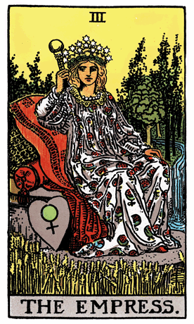

As we continue our exploration of the Major Arcana in the Rider-Waite Tarot Deck, we encounter The Empress, a symbol of fertility, nurturing energy, and the bountiful embrace of Mother Nature. Seated on a throne adorned with a heart-shaped shield, she represents the embodiment of the feminine principle in its most nurturing and creative form.
The Empress is often depicted surrounded by lush landscapes and fields, emphasizing her connection to the natural world. Wheat and pomegranates, symbols of fertility and abundance, adorn her attire. The flowing river and the waterfall behind her symbolize the perpetual flow of life, growth, and renewal. The Empress embodies the Earth Mother, a source of unconditional love, warmth, and sustenance.
Her crown bears the symbol of Venus, connecting her to the principles of love, beauty, and harmony. This association underscores The Empress's role as a creative force, not only in terms of procreation but also in the realms of art, beauty, and the expression of the nurturing aspects of femininity.
In a tarot reading, The Empress often emerges as a harbinger of growth, abundance, and the flourishing of creative energy. It suggests a period of fertility, not only in the literal sense but also in terms of creative projects, ideas, and emotional well-being. The Empress invites individuals to embrace the nurturing qualities within themselves, fostering a sense of security and abundance in their lives.
The Empress's position on the throne symbolizes her regal authority and the balance between power and compassion. She rules with love and wisdom, encouraging individuals to lead with their hearts and create an environment of warmth and understanding. The heart-shaped shield reflects her protective nature, symbolizing the need to create a safe and loving space for oneself and others.
The association of The Empress with Venus also implies a connection to sensuality, pleasure, and the appreciation of beauty. In this context, The Empress encourages individuals to indulge in the pleasures of the senses, whether through art, nature, or meaningful relationships. It speaks to the importance of finding joy and beauty in the simple, everyday experiences of life.
From a psychological standpoint, The Empress represents the nurturing and maternal aspects within the psyche. It suggests a need for self-care, self-love, and the cultivation of a supportive environment. The Empress invites individuals to tap into their creative potential, recognizing the importance of expressing emotions and fostering a sense of well-being.
In a reversed position, The Empress may indicate a neglect of self-care or a lack of connection to one's nurturing qualities. It could suggest issues related to fertility, creativity, or an imbalance in giving and receiving love. In such cases, The Empress serves as a gentle reminder to prioritize self-nurturing and to create a harmonious balance in relationships.
Archetypally, The Empress aligns with the archetype of the Earth Mother, a universal symbol found in various cultures throughout history. She embodies the qualities of fertility, protection, and the cyclical nature of life. The Empress is akin to Demeter in Greek mythology, who nurtures the land and ensures its abundance.
Societally, The Empress represents the importance of nurturing and caring for the environment, recognizing our interconnectedness with nature. It calls for a collective shift toward sustainable practices, appreciation of the arts, and the fostering of a society that values compassion and abundance for all.
In conclusion, The Empress in the Rider-Waite Tarot Deck invites us to embrace the nurturing aspects of life, whether in the form of personal relationships, creative endeavors, or the appreciation of nature's beauty. She is a reminder of the abundance that surrounds us and the importance of fostering a loving and supportive environment. The Empress beckons individuals to connect with their creative potential, express love openly, and bask in the nurturing energy that sustains and enriches life's journey.